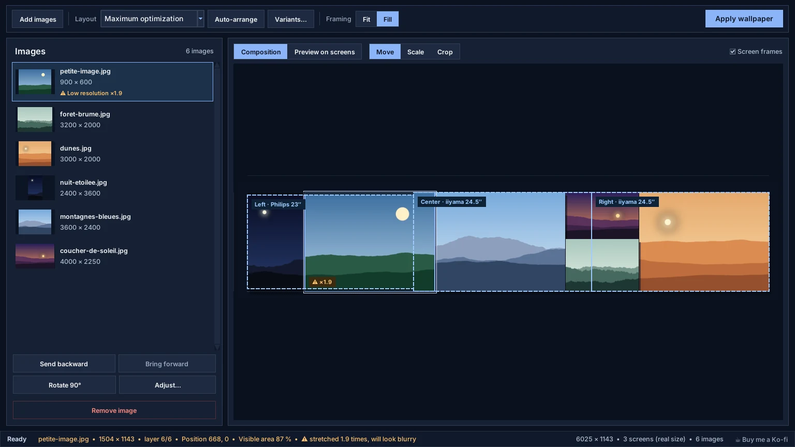
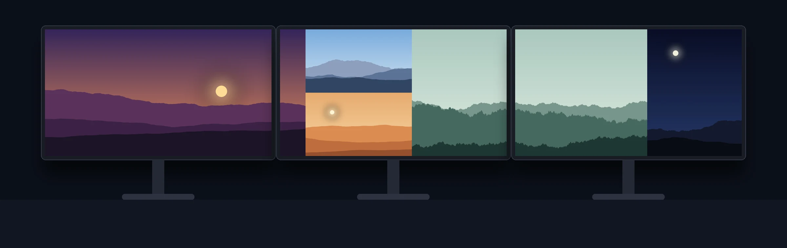
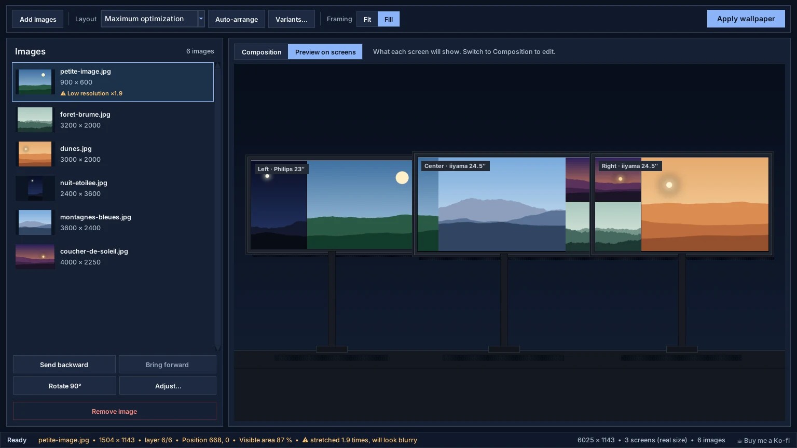

Redesigned interface
One toolbar row, one large workspace and a status bar: the wallpaper finally gets the room it deserves.
Version 2026.11.13 aligns images on the real size of your screens, can fill every screen with face-aware cropping, and keeps your wallpaper in place when screens change.

One toolbar row, the image list on the left and the composition across three screens, with the warning on the image that is too small.
A simpler interface, and a wallpaper that really follows your desk.
One toolbar row, one large workspace and a status bar: the wallpaper finally gets the room it deserves.
Switch between Composition and Preview to see what each screen will show. Off-screen areas are dimmed.
An image too small for its screen is flagged in the list, on the image and in the status bar, before it looks blurry.
“Left · Philips 23″” instead of \\.\DISPLAY2: the position, brand and diagonal of each screen.
Screens are placed by their physical size and the gap between panels, so a horizon stays straight.
Face-aware cropping, 4 variants to choose from, one wallpaper per screen setup reapplied automatically.
One composition split screen by screen and applied directly as the Windows wallpaper.

Each screen gets its own image at its exact resolution.
The Preview tab shows what each screen will display, with its name and size.

Screens are drawn the way they sit on your desk.
From photo folder to desktop in five steps.
“Add images” button or drag and drop. Phone photos are turned upright.
Six layouts, including maximum optimization. Variants… suggests four other arrangements.
Fit keeps every image whole; Fill covers the screens by cropping around faces.
Move, Scale, Crop, layers, rotation and adjustments. Ctrl+Z undoes.
“Apply wallpaper” splits the composition and applies it screen by screen.
The new UI sits on top of the same no-crop, mixed-monitor workflow.
Fix the common dual-monitor wallpaper problem without forced cropping.
Keep every photo visible, even across uneven screens.
Handle different resolutions, heights, and aspect ratios cleanly.
Quick answers about the new editing workflow and the product itself.
Not by default. Fit mode keeps every image whole, so empty space can remain. The optional Fill mode covers the screens and crops each photo around detected faces, never distorting it.
Yes. Turn on Real screen size in the Screens menu: each screen is placed by its physical size and the gap between panels, so a horizon stays straight across a 27-inch and a 24-inch display.
Yes. Mixed resolutions, different heights, and uneven desk layouts are the core use case.
Yes. The app can export a large composition and split the result into per-monitor images mapped to your physical setup.
Explore the download page, workflow details, and use cases.
Full WallCraft Pro guide: add images, layouts, Fit or Fill, mouse editing, variants, preview, real screen size, automatic wallpaper and shortcuts.
WallCraft Pro 2026.11.13 lines up one image across screens of different physical sizes, fills screens with face-aware cropping, keeps your wallpaper when you dock or undock, and rotates images automatically.
See how WallCraft Pro imports images, scales them manually, changes layer order, previews mixed-monitor results, and applies wallpapers on Windows.
Explore WallCraft Pro use cases for dual monitors, triple screens, laptop plus external displays, ultrawide setups, and mixed monitor sizes.
Read the WallCraft Pro FAQ about cropping, mixed monitor sizes, Windows support, split export, open source access, and download state.
Compare WallCraft Pro with Windows personalization, Wallpaper Engine, and DisplayFusion to choose the right tool for static mixed-monitor wallpapers.
Download the current build, test your monitor layout, and keep the GitHub repository nearby for updates and source code.